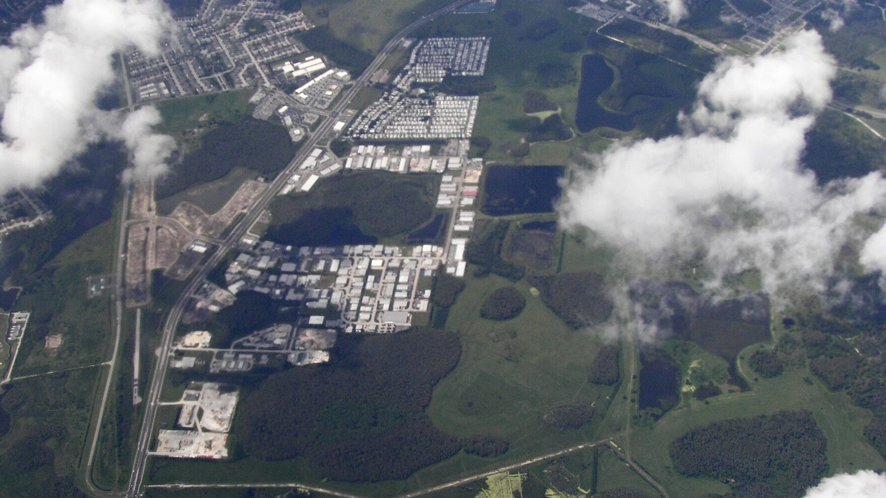
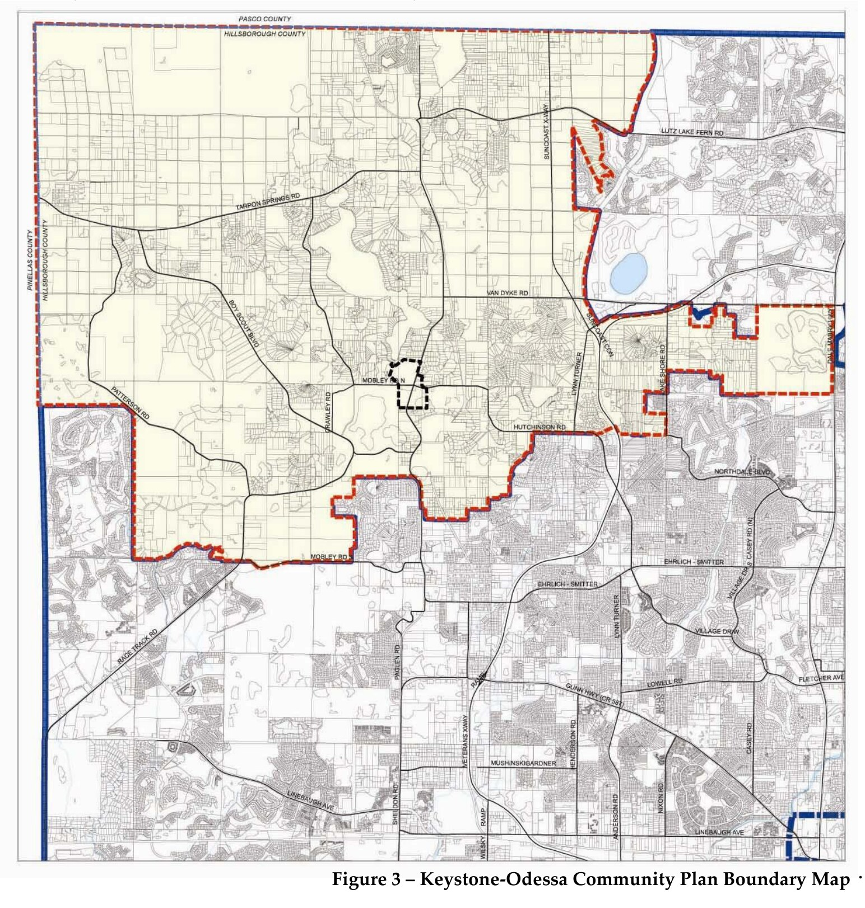
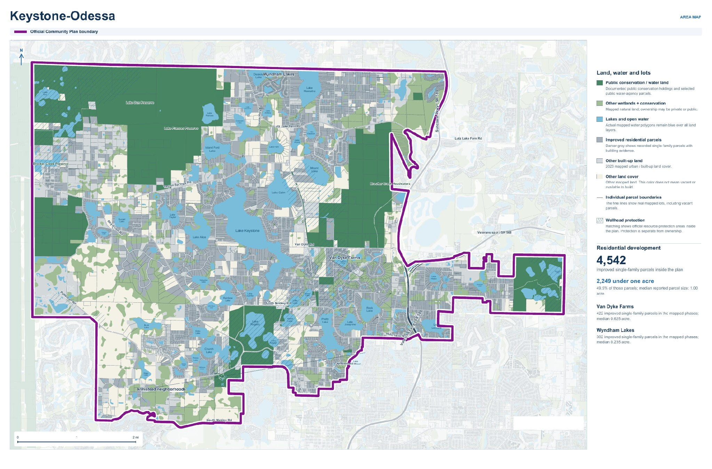
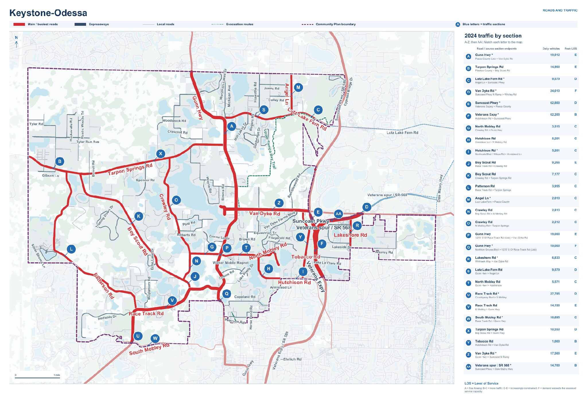

Community Plan
Source Livable Communities Element, pp. 17–27Date June 26, 2026View DocumentDensity, rural character, commercial policies
Policies center on about one home per five acres in the relevant areas and limit commercial location and scale.
The Keystone–Odessa Community Plan maintains a very-low-density development pattern and limits where many commercial activities can be located and how large they can be. These rules affect housing, distance to services, travel needs, and the ability to provide infrastructure efficiently.

Keystone–Odessa when the Community Plan was created
Keystone–Odessa today, 2026
Each figure will be published only from cited Census and County records. Sample data — to be replaced with verified Safer Communities United records.
Illustrative — pending verificationThe Community Plan protects very-low-density residential development in the relevant areas, with policies centered around approximately one dwelling unit per five acres and limits on increasing density.
Left: 5-acre pattern — approximately 1 home per 5 acres, 10 homes on 50 acres. Right: moderate low-density pattern — smaller lots with more homes, same amount of land. Conceptual illustration, not a measured or engineered site plan.
Large-lot requirements increase the amount of land needed for each household and limit the number and variety of housing options.
The assessment document also identifies potential impacts on younger families, workers, teachers, and seniors.

Everyday needs still exist even when services are farther away. The Community Plan concentrates commercial development in certain locations and limits the scale and characteristics of commercial uses in other areas.
People still need
When these needs are located farther away from residential areas, people must travel farther to access them.
Choose a residential area to see illustrative drive-time ranges to everyday services.
Residential area
Sample areas for layout review. Real areas and times will come from Safer Communities United’s analysis.
Sample estimate for this area Illustrative range across the Plan area
Drive times are estimates and for illustrative purposes only. Actual times may vary depending on location and traffic conditions. These are illustrative image labels, not newly verified local travel-time findings.
More people means more demand for roads, water, services, and infrastructure.
Baseline: conditions in the Community Plan's early years.
Decennial Census and County records.
Decennial Census and County records.
Current conditions on the ground.
Figures for each year will appear here once verified and cited.
Illustrative — pending verificationThe community changes. Infrastructure and the planning framework must be able to adapt to that change.
The Master Assessment identifies that the gap between actual growth and the Plan’s old assumptions can make it increasingly difficult to provide roads, services, and infrastructure.
The Keystone–Odessa Community Plan and the Hillsborough County Comprehensive Plan take different approaches to growth, land use, and development.
Emphasizes a very-low-density rural pattern.
Plans land use through a countywide framework that considers growth, development, and infrastructure together.
Policies of approximately 1 dwelling / 5 acres in the relevant areas.
Provides additional land-use and development tools for evaluating how and where development can occur.
Limits commercial development by location, scale, and rural character.
Allows service and development needs to be evaluated together with land use and infrastructure.
Limits the ability of the development pattern to adapt.
Allows growth to be evaluated together with infrastructure and planning standards.
This section is only a comparison summary. Detailed policy analysis is reserved for the Full Comparison Page.
View the Growth & Development Comparison →These documents, data and maps show how the Community Plan affects growth, development and daily life. Illustrative — pending verification
Policies center on about one home per five acres in the relevant areas and limit commercial location and scale.
The Plan boundary and the mapped land-use pattern inside it.
Lot sizes and housing counts inside the boundary.

Where everyday services sit relative to residential areas.

Trip lengths to services and traffic on the main roads.
Road, utility and drainage records related to development.
Read the petition in full before you sign, or join as a supporter to stay updated.